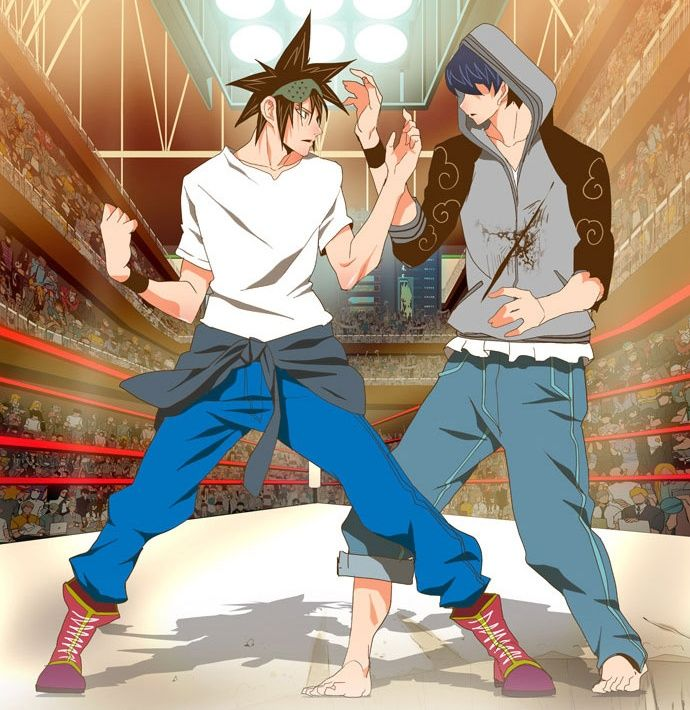
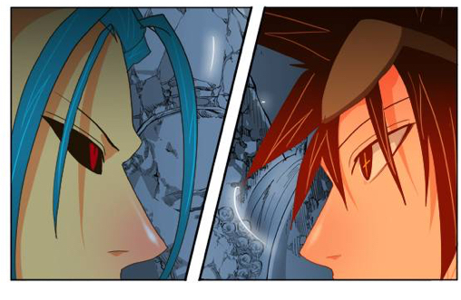

The God of Highschool é um manhwa sul-coreano escrito e ilustrado por Yongje Park.
A história acompanha Jin Mori, um especialista em Re:Taekwondo que participa de um torneio épico
chamado
"The God of Highschool" onde lutadores de todo o mundo competem.
O torneio promete realizar qualquer desejo do vencedor, atraindo lutadores com habilidades
extraordinárias. À medida que a competição avança, segredos sobre poderes sobrenaturais chamados
"Charyeok", divindades antigas e conspirações governamentais são revelados.
Com combates intensos, personagens carismáticos e uma narrativa que mistura artes marciais com
mitologia, The God of Highschool se tornou um fenômeno global, ganhando adaptação em anime e
conquistando milhões de fãs ao redor do mundo.
Este projeto foi desenvolvido com o objetivo de reunir informações sobre a obra The God of High School de forma organizada e interativa. A proposta é criar um site que facilite o acesso ao conteúdo para fãs e novos usuários, utilizando tecnologias web para proporcionar uma boa experiência de navegação.

